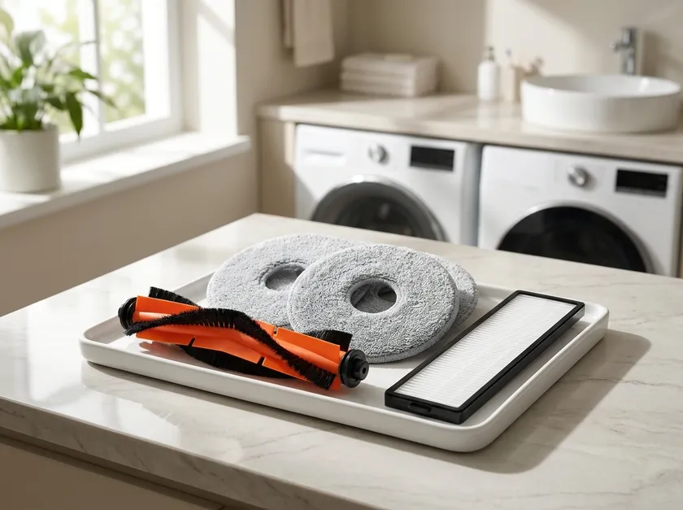

에코백스 (ECOVACS)
샤오미 로봇청소기 X20 Pro 소모품 교체 주기｜필터·원형 걸레·더스트백 1년 세트
글·구성: 제이상점 · 기종별 1:1 호환 실물 점검 · 교체 주기 비교표 · 스마트스토어 패키지 안내

핵심 관리 · 선택 체크포인트
- 요즘 집에서 겪기 쉬운 올인원 물걸레 세척·열풍 건조로 매일 편하게 쓰던 샤오미 로봇청소기 X20 Pro에서 앱 소모품 잔여 수명이 줄어들고 더스트백 마지막 봉투를 꺼내 쓴 시점, 혹시 우리 집 로봇청소기 이야기 같으신가요?
- 샤오미 X20 Pro 구매 전 꼭 짚어볼 실물 부품 디테일: 호환 소모품을 고를 때 가장 먼저 살펴야 할 핵심은 슬림형 가로 블랙 프레임 헤파필터와 주황 V자 롤러·크라프트 칼라 더스트백의 정밀한 체결감입니다.
- 샤오미 X20 Pro 소모품 교체 주기 & 전용 규격 한눈 비교표: 앱 잔여 수명 퍼센트(%)와 함께 아래 실물 마모 신호를 대조해 보시면 교체 타이밍을 놓치지 않고 샤오미 X20 Pro를 최적 상태로 유지할 수 있습니다.
- 단품 구매 vs 패키지 선택, 샤오미 X20 Pro 옵션 고르는 현실 기준: 제이상점 샤오미 X20 Pro 전용 세트는 1년 세트·6개월 세트·3개월 세트(세제 미포함 소모품 5종 풀패키지)로 구성되어 있습니다.
- 현재 대표 구성 기준가 63,400원대(옵션·할인 혜택에 따라 스토어 결제 화면 기준 상이)로 운영 중이니 우리 집 청소 주기와 남은 재고를 대조한 뒤 제이상점 샤오미 로봇청소기 X20 Pro 스마트스토어 상세 옵션에서 가장 실속 있는 구성을 선택해 보세요.
실물 부품 디테일 · 관리 구성 이미지



부품 규격 · 점검 기준표
| 핵심 소모품 구분 | 샤오미 X20 Pro 전용 규격 특징 | 체감 교체 신호 & 권장 관리 기준 |
|---|---|---|
| 주황 V자 메인·3암 브러시 | X20 Pro 전용 길이 롤러 + 3갈래 사이드브러시 | 양끝 회전축 캡 분리 청소 및 브러시 솔 마모 시 교체 |
| 슬림형 블랙 프레임 필터 | 가로 직사각 워셔블 헤파필터 | 물세척 후 24시간 그늘 완전 건조하며 예비 필터와 1:1 교대 |
| 크라프트 더스트백·원형 걸레 | 갈색 판지 칼라 봉투 + 그레이 원형 패드 쌍 | 더스트백 카드 홀더 밀착 장착 및 걸레 2매 동시 교체 |
💡 교체 주기가 겹치는 필터·브러시·물걸레·더스트백은 단품 배송비를 여러 번 내기보다 샤오미 X20 Pro 기간별 세트(3개월·6개월·1년)로 미리 구비해 두면 물세척 후 24시간 교대 건조까지 끊김 없이 관리할 수 있습니다.
자주 묻는 질문 (FAQ)
Q. 샤오미 X20 Pro와 X20 MAX는 외관이 비슷한데 소모품을 구분 없이 주문해도 되나요?
A. 기종별 메인브러시 규격과 세부 장착부 치수에 차이가 있을 수 있으므로 본인 앱에 등록된 정확한 모델명대로 고르시는 것이 안전합니다.
Q. 올인원 스테이션 열풍 건조를 쓰는데도 원형 물걸레 패드를 따로 손빨래해 줄 필요가 있나요?
A. 평소에는 스테이션 자동 세척·건조로 충분하지만, 주방 기름때를 닦은 날이나 2주에 한 번 정도 패드를 떼어 중성세제로 주물러 빨고 예비 패드와 교대해 주면 쉰내 예방과 닦임 품질에 훨씬 좋습니다.
제이상점 1:1 검수 추천 패키지 · 구매 안내
메인 추천 구성
대표 구성 참고가 63,400원대 (옵션·쿠폰별 스마트스토어 결제 화면 기준)
1년 세트 (세제 미포함)6개월 세트 (세제 미포함)3개월 세트 (세제 미포함)
![[호환] 샤오미 X20 MAX 소모품 걸레 더스트백 브러쉬 필터 물걸레 제이상점 1년 패키지](../../assets/img/xiaomi-x20-max-product-87b7e4a8.webp)
함께 많이 찾는 보충 구성
대표 구성 참고가 68,400원대 (옵션·쿠폰별 스마트스토어 결제 화면 기준)
1년 세트 (세제 미포함)6개월 세트 (세제 미포함)3개월 세트 (세제 미포함)
☑️ 주문 전 확인해 두면 좋은 제이상점 안심 포인트
· 기종별 1:1 전용 규격 검수: 모델명·연식에 맞는 호환·정품 구성을 검수해 오주문 불안을 줄였습니다.
· 해외직배송 미리 주문 팁: 중국 구매대행·해외직배송 상품이므로 마지막 여분 1개를 꺼내 쓰는 시점에 개인통관고유부호와 함께 여유 있게 주문해 두시면 훨씬 경제적인 비용으로 끊김 없이 교체하실 수 있습니다.
· 기종별 1:1 전용 규격 검수: 모델명·연식에 맞는 호환·정품 구성을 검수해 오주문 불안을 줄였습니다.
· 해외직배송 미리 주문 팁: 중국 구매대행·해외직배송 상품이므로 마지막 여분 1개를 꺼내 쓰는 시점에 개인통관고유부호와 함께 여유 있게 주문해 두시면 훨씬 경제적인 비용으로 끊김 없이 교체하실 수 있습니다.
📖 더 많은 가정 내 사용 스토리와 상세 후기가 궁금하시다면
📱 네이버 블로그 모바일 원문 보기 ↗